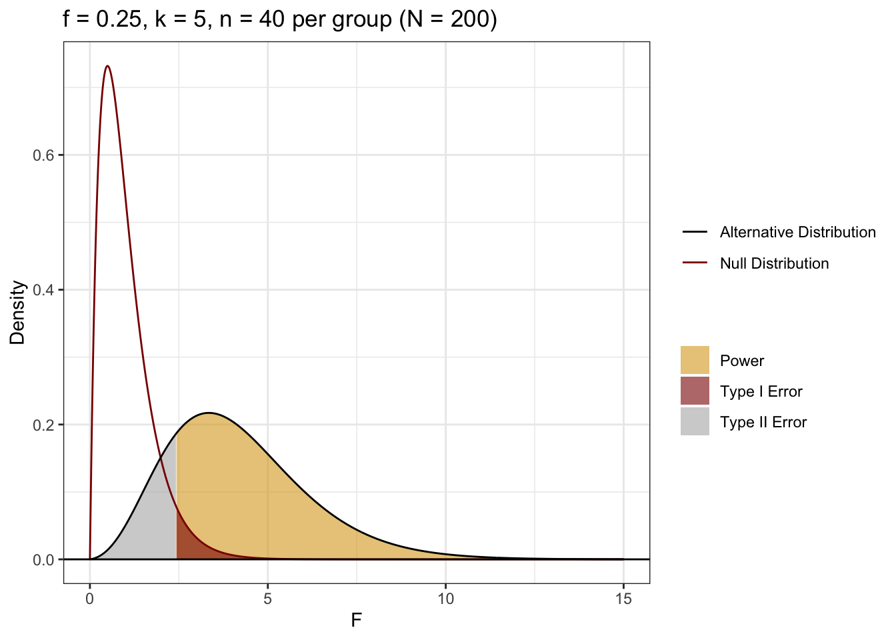
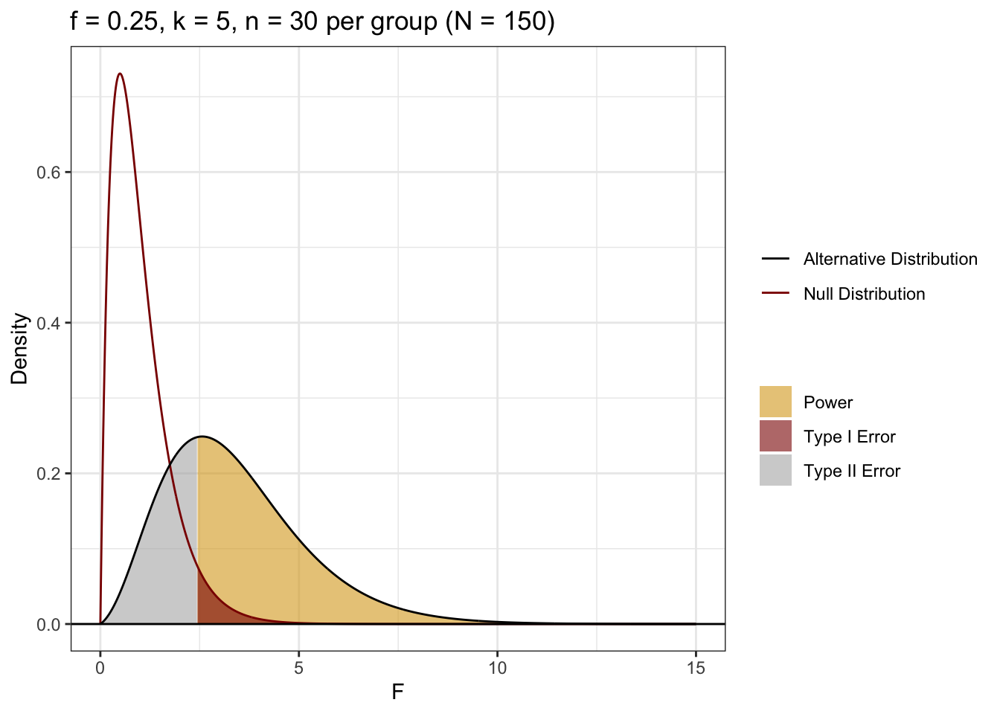
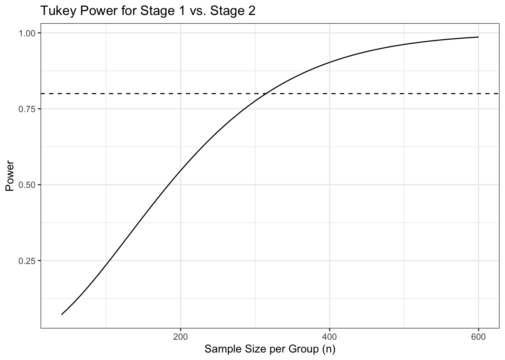
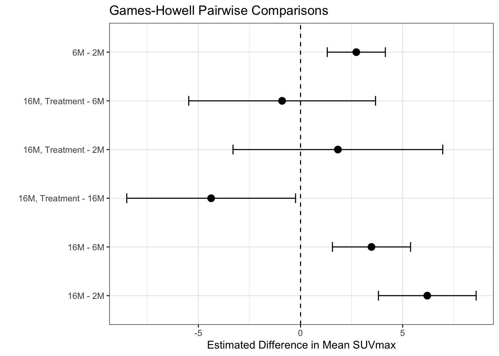

1 Question 1: Why do we Correct for Multiple Comparisons?
A student asked me what the point of correcting for multiple comparisons was. They made a two interesting points:
They are different outcomes, so, unlike the coin flip example (where the coin is the same) it doesn’t makes sense to combine them.
If a manuscript presented three studies with \(t\)-tests, they don’t correct for multiple comparisons across those tests.
When we conduct all pairwise comparisons after an omnibus test like ANOVA, we are testing a single family of hypotheses to answer one overarching question (“Which of these groups are different?”). Every additional test provides another opportunity to commit a Type I error from random noise. Similar to the coin, the probability of making at least one false error across \(J\) independent tests grows exponentially: \(1 - (1 - \alpha)^J\). Note that our pairwise comparisons are not independent, so it’s slightly different.
We don’t correct for inferences across separate studies because they typically test distinct hypotheses using independent samples. Our attempt to address the multiple comparisons problem is specifically confined to the issue of increased Type I error within a single decision-making context. If we don’t, we can find ourselves in a \(p\)-hacking-like situation, where an investigator might search through many tests to find one \(p < 0.05\) (a potential false discovery), rather than making decisions to best position themselves for finding a true discovery.
Here, we will quickly demonstrate why we correct for the multiple comparisons problem when conducting several tests to answer the same question.
1.1 Part a
Complete the following steps in \(R=1000\) simulations.
Simulate data for \(k=5\) samples \(n=30\) drawn from a standard Gaussian distribution.
Use pairwise.t.test(..., p.adjust.method="none") to compute unadjusted pairwise \(t\)-tests and record if any comparison yields statistically discernible support for a non-zero mean.
Use rstatix::tukey_hsd(...) to compute the Tukey’s HSD adjusted pairwise tests and record if any comparison yields statistically discernible support for a non-zero mean.
Without adjustment, the Type I error rate across the ten pairwise comparisons was 0.294, way larger than \(\alpha = 0.05\). With Tukey’s HSD, it was 0.053, very close to \(\alpha = 0.05\). Tukey’s HSD keeps the family-wise Type I error rate at \(\alpha\); unadjusted \(t\)-tests do not.
1.2 Part b
Redo the simulation, changing to adjust according to the false discovery rate p.adjust.method="BH" and comment on the differences.
With the Benjamini-Hochberg adjustment, the Type I error rate was 0.047, close to \(\alpha = 0.05\) and similar to Tukey’s HSD (0.053). This is because every null hypothesis is true in this simulation, so any rejection is a false discovery and the false discovery rate equals the family-wise error rate.
2 Question 2: Power Analyses
Revisit the MFAP4 study from class.
2.1 Part a
Assume the researchers were targeting a moderate effect size of Cohen’s \(f = 0.25\), setting significance level \(\alpha = 0.05\) and desired power \(1 - \beta = 0.80\). Were they adequately powered?
Note: The actual effect size is \(f=0.55\), but researchers usually do not know that ahead of time and defaulted to moderate, instead of specifying a large effect.
What is the required sample size per group (\(n\)) and the overall total sample size (\(N\))? Write the R code using the pwr package to calculate this sample size. This package assumes all samples are of the same size so \(N=nk\), where \(k\) is the number of samples. Note that the best answers will have a corresponding graphical display.
To detect a moderate effect (\(f = 0.25\)) with \(\alpha = 0.05\) and 80% power across \(k = 5\) groups, the researchers need \(n = 40\) patients per group, or \(N = 200\) in total. The study was adequately powered: every fibrosis stage had more than 40 patients and the total sample of \(N = 542\) is well above 200.
Code
df1 <- k.2-1df2 <- N.a - k.2lambda <- k.2* n.a * f.2^2F.crit <-qf(1- alpha, df1, df2)power.a <-1-pf(F.crit, df1, df2, ncp = lambda)plot.dat <-tibble(x =seq(0, 15, length.out =1000)) |>mutate(null =df(x, df1, df2),alt =df(x, df1, df2, ncp = lambda))ggplot(plot.dat, aes(x = x)) +geom_area(data =filter(plot.dat, x >= F.crit), aes(y = alt, fill ="Power"), alpha =0.6) +geom_area(data =filter(plot.dat, x <= F.crit), aes(y = alt, fill ="Type II Error"), alpha =0.6) +geom_area(data =filter(plot.dat, x >= F.crit), aes(y = null, fill ="Type I Error"), alpha =0.6) +geom_line(aes(y = null, color ="Null Distribution")) +geom_line(aes(y = alt, color ="Alternative Distribution")) +geom_hline(yintercept =0) +scale_fill_manual("", values =c("Power"="goldenrod", "Type I Error"="darkred", "Type II Error"="grey70")) +scale_color_manual("", values =c("Alternative Distribution"="black","Null Distribution"="darkred")) +theme_bw() +labs(x ="F", y ="Density",title =paste0("f = 0.25, k = 5, n = ", n.a, " per group (N = ", N.a, ")"))

2.2 Part b
The project was funded by several agencies. Suppose that a funding agency suggested funding limiting the researchers to \(N=150\). Evaluate this suggestion in the context of the ANOVA. Would that be large enough to be adequately powered?
Compute the non-centrality parameter \[\lambda = k \cdot n \cdot f^2\] and use the non-central \(F\) distribution to compute the power under \(H_a\) for Cohen’s \(f = 0.25\). Calculate the statistical power achieved under this budget constraint. Note that the best answers will have a corresponding graphical display.
plot.dat.b <-tibble(x =seq(0, 15, length.out =1000)) |>mutate(null =df(x, df1.b, df2.b),alt =df(x, df1.b, df2.b, ncp = lambda.b))ggplot(plot.dat.b, aes(x = x)) +geom_area(data =filter(plot.dat.b, x >= F.crit.b), aes(y = alt, fill ="Power"), alpha =0.6) +geom_area(data =filter(plot.dat.b, x <= F.crit.b), aes(y = alt, fill ="Type II Error"), alpha =0.6) +geom_area(data =filter(plot.dat.b, x >= F.crit.b), aes(y = null, fill ="Type I Error"), alpha =0.6) +geom_line(aes(y = null, color ="Null Distribution")) +geom_line(aes(y = alt, color ="Alternative Distribution")) +geom_hline(yintercept =0) +scale_fill_manual("", values =c("Power"="goldenrod", "Type I Error"="darkred", "Type II Error"="grey70")) +scale_color_manual("", values =c("Alternative Distribution"="black","Null Distribution"="darkred")) +theme_bw() +labs(x ="F", y ="Density",title =paste0("f = 0.25, k = 5, n = ", n.b, " per group (N = ", N.b, ")"))

With \(N = 150\), each group has \(n = 30\) patients, which is below the \(n = 40\) required in Part a. The non-centrality parameter is 9.375, and the power is 0.668. The study is underpowered to detect a moderate effect.
2.3 Part c
In the article the researchers state:
However, the statistical power was not sufficient to allow an accurate discrimination of no to moderate stages of hepatic fibrosis (F0–F2) from severe fibrosis and cirrhosis (F3 and F4).
The European Association for the Study of the Liver (EASL) provides treatment recommendations based on these stages.
Stages 0-1: Treatment is deferred with regularly assessment
Stage 2: Treatment is justified for those in stage 2
Stage 3-4: Treatment is a priority for those in stages
Suppose the researcher wanted to perform a follow-up test where they want to ensure adequate power not just for the overall ANOVA \(F\)-test, but specifically to detect a pairwise differences between stages 1 and 2. Explain why the sample size computed in Part a may not be enough and use PMCMRplus::power.tukey.test() to compute a sample size that attains adequate power.
Note: The researchers would have had to do this a priori. Because we aren’t medical experts, you can use sample estimates using the original data. \[\begin{align*}
n & = \text{answer from part a}\\
\mu_{\Delta} & = 0.25 \\
\sigma^2_{\text{pooled}} & = \frac{(176-1)0.85^2 + (135-1)0.84^2}{176+135-2} = 0.7152\\
\sigma_{\text{within}}= 0.77
\end{align*}\]
n.grid <- n.a:600power.grid <-sapply(n.grid, function(n) PMCMRplus::power.tukey.test(n = n, groups = k.2, delta = delta.c, within.var = var.c)$power)(n.c <- n.grid[which(power.grid >=0.80)[1]])
[1] 315
Code
(N.c <- n.c * k.2)
[1] 1575
Code
tibble(n = n.grid, power = power.grid) |>ggplot(aes(x = n, y = power)) +geom_line() +geom_hline(yintercept =0.80, linetype ="dashed") +theme_bw() +labs(x ="Sample Size per Group (n)", y ="Power",title ="Tukey Power for Stage 1 vs. Stage 2")

Detecting the specific difference between Stages 1 and 2 is harder for three reasons: the difference (\(\mu_\Delta = 0.25\)) is small relative to the within-group variability (about 0.28 standard deviations), a pairwise comparison uses information from only two groups, and Tukey’s adjustment raises the critical value to control the family-wise error rate across all ten comparisons. With \(n = 40\) per group, the power to detect the Stage 1 vs. Stage 2 difference is only 0.072. Achieving 80% power requires \(n = 315\) per group (\(N = 1575\)).
2.4 Part d
How does the answer to Part c change if they wanted to have adequate power for all pairwise comparisons? Use Superpower::ANOVA_design() to set up the ANOVA set up.
Note: Use design “5b” and the following. \[\begin{align*}
\boldsymbol{\mu} &= \{2.92, 3.11, 3.36, 4.04, 4.35\}\\
\sigma^2 &= \frac{(97-1)0.87^2 + (176-1)0.85^2 + (135-1)0.84^2 + (67-1)1.00^2 + (67-1)0.90^2}{97+176+135+67+67-5} = 0.80
\end{align*}\]
Compute the power of the researcher’s design (part a) using Superpower::ANOVA_power(). If the researchers were able to oversample by double, a common approach to addressing this issue, would their power be at least 80% for all pariwise comparisons?
Note: This code can take a minute. You may want to set cache: true in your R chunk yaml header. You will also see more power because the actual effect size was 0.55.
Using the Part a design (\(n = 40\) per group), the power for each pairwise comparison ranges from 13.9% to 100%. The comparisons between widely separated stages (e.g., Stage 0 vs. Stage 4) have near-100% power, but four comparisons fall below 80%: Stage 0 vs. 1 (13.9%), Stage 0 vs. 2 (57.5%), Stage 1 vs. 2 (24.0%), and Stage 3 vs. 4 (35.0%). Doubling the sample size to \(n = 80\) per group raises Stage 0 vs. 2 to 88.8%, but three comparisons remain underpowered: Stage 0 vs. 1 (28.8%), Stage 1 vs. 2 (41.7%), and Stage 3 vs. 4 (59.1%). So doubling the sample size would not give at least 80% power for all pairwise comparisons.
3 Question 3: An Application
Yang et al. (2023) investigate whether low-dose nicotine can counteract age-related metabolic decline. The proposed mechanism is through \(\text{NAD}^+\), which is a chemical compound essential for metabolic energy production. The idea is that low-dose nicotine could help improve and/or maintain the recycling of \(\text{NAD}^+\) by activating the salvage enzyme NAMPT via SIRT1. This could, in turn, restore \(\text{NAD}^+\) homeostasis, which is the biological balance maintained within a cell between the production, recycling, and degradation of nicotinamide adenine dinucleotide (\(\text{NAD}^+\)).
Note: It is low-dose nicotine. Cigarette smoking delivers massive doses of nicotine along with other harmful chemicals. This is not an endorsement for smoking.
Male mice across distinct life stages – 2, 6, and 16 months – were categorized to evaluate natural, age-dependent metabolic and enzymatic shifts in two conditions.
Treatment: low-dose nicotine (administered in drinking water)
Control: no-dose placebo (administered in drinking water)
The researchers then aimed to compare treatment against control in the following samples:
2 months old, control
6 months old, control
16 months old, control
16 months old, treatment
Using PET imaging, the researchers measured age-induced inflammatory glucose hypermetabolism (\(\text{SUV}_{\text{max}}\)). They want to show that this quantity increases with age and those in the nicotine group saw levels comparable to younger mice.
Table 1: \(\text{SUV}_{\text{max}}\) measurements in the heart across age and treatment groups
Replicate
2M
6M
16M
16M, Treatment
1
1.48969
4.36000
7.30182
4.69304
2
1.30168
4.28807
7.12416
2.51326
3
1.30620
3.64184
8.28764
2.38019
3.1 Part a
State the null (\(H_0\)) and alternative (\(H_a\)) hypotheses for the omnibus test.
The control groups show a clear increase in \(\text{SUV}_{\text{max}}\) with age, from a mean of about 1.37 at 2 months to 4.10 at 6 months and 7.57 at 16 months. The 16-month nicotine-treated mice had a mean of about 3.20, much lower than 16-month controls and between the 2- and 6-month controls, which is consistent with the researchers’ hypothesis. However, the variability differs substantially across groups indicating we should be using Welch’s ANOVA.
3.3 Part c
Perform and report the results of the omnibus test. Make sure to evaluate the conditions for using the method you choose.
Code
(test.result.q3 <-oneway.test(SUV ~ Group, data = dat.q3))
One-way analysis of means (not assuming equal variances)
data: SUV and Group
F = 98.464, num df = 3.0000, denom df = 3.5496, p-value = 0.0006851
Code
omega_squared(test.result.q3)
# Effect Size for ANOVA
Omega2 | 95% CI
---------------------
0.97 | [0.83, 1.00]
- One-sided CIs: upper bound fixed at [1.00].
Code
(omega.q3 <-omega_squared(test.result.q3))
# Effect Size for ANOVA
Omega2 | 95% CI
---------------------
0.97 | [0.83, 1.00]
- One-sided CIs: upper bound fixed at [1.00].
Welch’s ANOVA gives \(F = 98.46\) with \(3\) and \(3.55\) degrees of freedom (\(p = 6.85\times 10^{-4}\)). Since \(p < \alpha = 0.05\), the data provide statistically discernible support that the mean \(\text{SUV}_{\text{max}}\) differs for at least one group. The effect size is very large (\(\omega^2 = 0.97\), 95% CI: [0.83, 1.00]), indicating that about 97% of the variability in \(\text{SUV}_{\text{max}}\) is explained by differences between groups.
3.4 Part d
Conduct post-hoc pairwise comparisons to determine if age-induced inflammatory glucose hypermetabolism increase with age and whether low-dose nicotine reduces age-induced inflammatory glucose hypermetabolism.
ggplot(posthoc.result.q3, aes(x = estimate, y = Comparison)) +geom_vline(xintercept =0, linetype ="dashed") +geom_errorbarh(aes(xmin = conf.low, xmax = conf.high), height =0.2) +geom_point(size =3) +theme_bw() +labs(x ="Estimated Difference in Mean SUVmax", y ="",title ="Games-Howell Pairwise Comparisons")

3.5 Part e
Write a short paragraph directly addressing the researcher’s hypothesis using your work in (a)-(d).
The data support the researchers’ first claim and partially support the second. Welch’s ANOVA provided statistically discernible support that mean \(\text{SUV}_{\text{max}}\) differs across groups (\(F = 98.46\), \(p = 6.85\times 10^{-4}\)), with a very large effect size (\(\omega^2 = 0.97\)). Games-Howell comparisons showed that \(\text{SUV}_{\text{max}}\) increased significantly with age among control mice, from 2 to 6 months and from 6 to 16 months, so age-induced inflammatory glucose hypermetabolism does appear to increase with age. The 16-month nicotine-treated mice had lower \(\text{SUV}_{\text{max}}\) than 16-month controls (\(p = 0.043\)), which suggests that low-dose nicotine reduces this age-related increase, although the evidence is borderline and the confidence interval is wide. However, the researchers only have three mice per group. Larger studies should be done to confirm the nicotine effect.
References
Yang, Liang, Junfeng Shen, Chunhua Liu, et al. 2023. “Nicotine Rebalances NAD+ Homeostasis and Improves Aging-Related Symptoms in Male Mice by Enhancing NAMPT Activity.”Nature Communications 14 (1): 900.